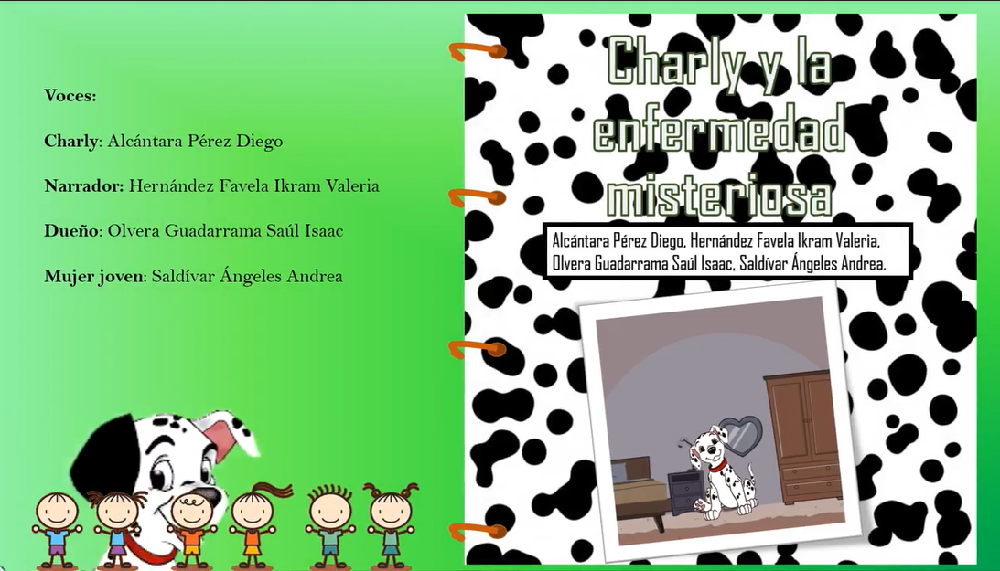

Expresión Oral y Escrita II
En la unidad de Expresión Oral y Escrita a II, se escribió un cuento relacionado a alguna problemática en la pandemia y posteriormente se animó en Power Point y se guardó como video.
